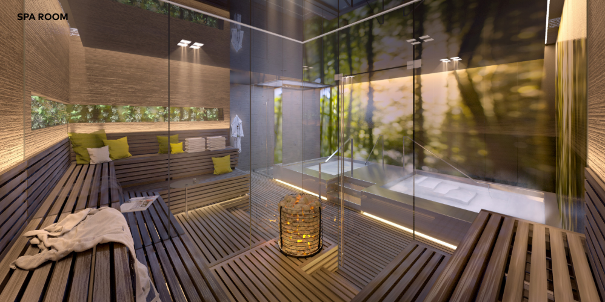
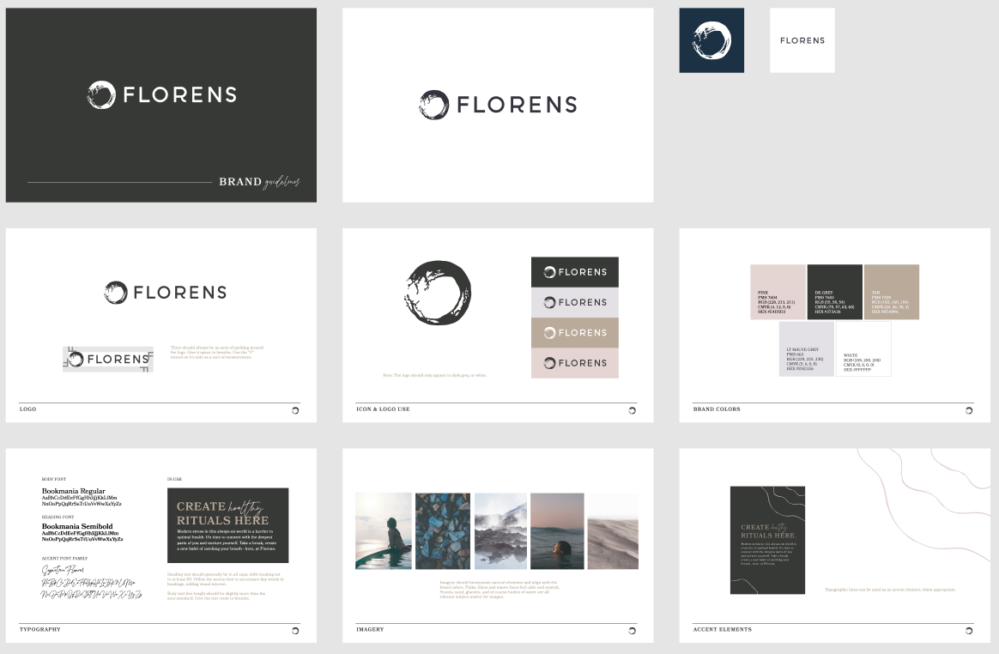
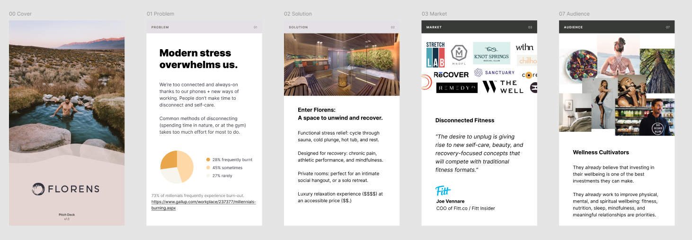
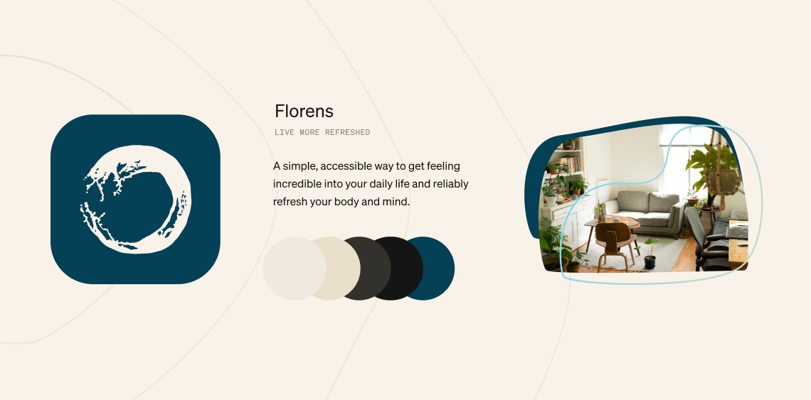
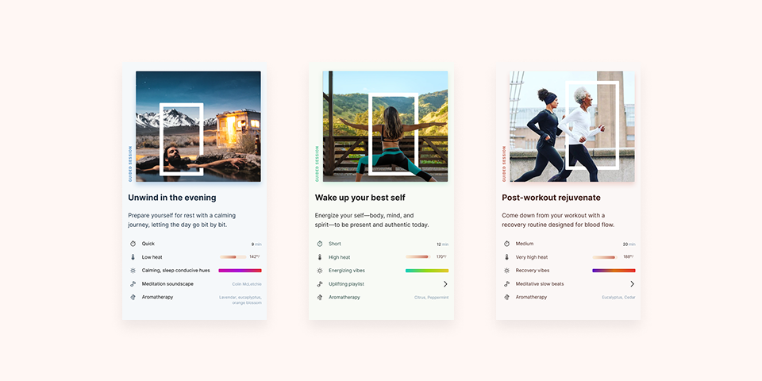
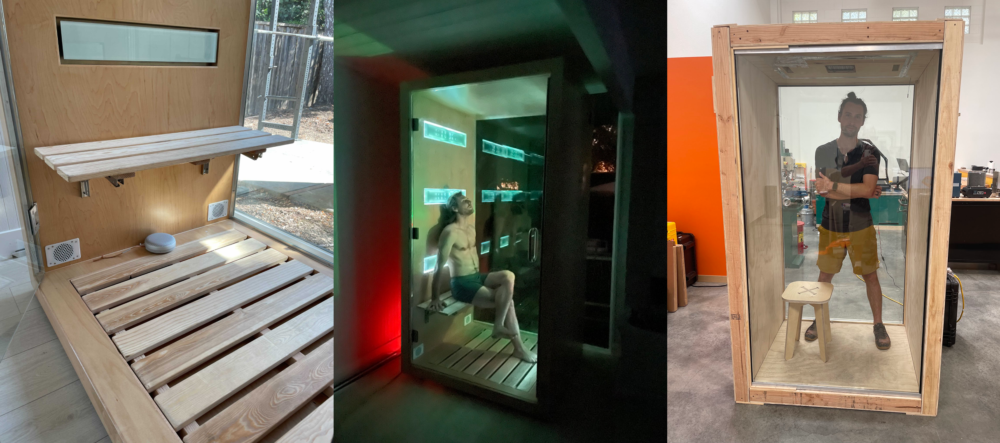

A company about ritual, refresh, and wellbeing
Florens started as a simple question: what would it look like to make recovery feel as accessible and habitual as going to the gym?
Coming off my time at Territory, entering early parenthood, and feeling the background hum of modern stress more acutely than ever, I kept returning to the same need: a reliable way to downshift and refill.
At first, that idea took a physical form: a Japanese onsen-inspired bathhouse with private rooms. Then COVID forced a hard reset. The bathhouse paused, but the deeper thread sharpened. Florens was always a company about ritual, refresh, and wellbeing. The product form changed, but the mission stayed intact.
A bathhouse as an antidote to modern stress
Florens began with a post-startup question that felt half playful, half urgent: "What if we built the place we wish existed?"
My spouse Brittany and I had fallen in love with Japanese onsen culture through our travels together. That experience—the ritual, the quiet, the way your whole nervous system recalibrates—stuck with both of us. We kept coming back to spaces like Knot Springs and Watercourse Way. The experience was visceral and subtle: heat and water as a clean reset for body and mind. This is not a luxury treat. It is a practice—something you come back to because it actually changes how you feel.
At its core was a belief: we should all have access to safe spaces for bits of brain, body, and heart recharge when we need them. If we did, we'd be happier and healthier in the day-to-day, even as we build long-term resilience.
Accessible
Not only for special occasions. Something you could return to weekly, the way you'd return to the gym.
Intimate
Private rooms to actually downshift. A space where you could let your guard down completely.
Ritual-driven
Designed around the practice of return. Something you build into your rhythm, not just your calendar.
Community-adjacent
A place you could share with someone without it being "another meal." Connection through shared experience.
I ran the idea by my friend Robert Morton, who had been exploring mindfulness at work in his own way. He wasn't part of Florens yet—that would come later, when we pivoted to sauna—but he was a close advisor and sounding board from the start. Together we kept asking the broader question: why is it so hard to find a place to catch your breath?
The other person I leaned on from the very beginning was Patrick Smith. Patrick had been one of the co-founders at Territory Foods and the person who originally hired me there. After I left we stayed close, and when I started working on Florens he became one of my most consistent thought partners—showing up every other week to work through whatever was in front of me, from business strategy to product to team dynamics. He'd stay involved across the entire life of the company.
The north star we landed on: every body and mind refreshed. The world was getting more stressful, more always-on, more screen-saturated. We wanted to create spaces where people could reconnect with themselves—places for recovery, for unwinding, for filling back up. Whether that took the form of a bathhouse or a sauna, recovery was always at the center.
The Florens Charter
We wrote a telescoping vision that started from the perpetual mission and zoomed in to what we could build today:
Perpetual: Help people live healthful, joyful, purposeful lives.
One day: Make hormetic stressors easier—fasting, fitness, mindfulness.
Later: Thermal hormetic stress. Hot and cold exposure therapies.
Today: Heat bathing. Sauna.
Each layer nested cleanly inside the one above. Whatever the product form, the mission was the same.
How we wanted to build
Even before Florens had a product, Brittany and I had a conviction about the kind of company it would be. If we were building a space for refresh, we couldn't do it while burning ourselves out. We had to practice what we preached—stay refreshed ourselves, grow at a pace that felt honest, build something we'd actually want to be part of for decades. The goal was never "scale fast and exit." It was closer to a zebra than a unicorn: real revenue, real impact, sustainable growth.
We didn't have all the language yet—that would come later, when we formalized a full operating philosophy around the sauna pivot—but the instinct was there from day one. Stewardship over extraction. Education over hype. Build the company you'd want to buy from.
Wellbeing seekers who were already doing "the work"
We framed the customer as wellbeing seekers—today more commonly called health optimizers. People already investing in their health and wellness. They don't need to be sold on the value of taking care of themselves; they're actively looking for the next thing that moves the needle. Their ears perk up when conversation turns to breathing routines, cold showers, mindfulness modes, and new modalities to try.
This wasn't an abstract persona for us. Robert and I had spent years at Territory Foods discovering exactly who this customer was: what they cared about, where they spent money, what their daily rhythms looked like, what made them trust a brand. We knew wellbeing seekers because we were them. We were building for ourselves as much as for anyone else.
They were also time-crunched and accustomed to superior direct-to-consumer experiences. High expectation bar for brands. Willing to invest in wellbeing, but the front-to-back customer experience had better be transparent, attentive, and tuned to fit into the rhythms and spaces of their life.
The opportunity sat at the intersection of three forces:
- Rising interest in recovery and wellbeing across demographics—within the $4.5T global wellness economy, a $175B spa and mineral springs market (mostly Asia-Pacific and Europe) and a $595B fitness and mind-body market
- A category full of fragmented experiences (fitness over here, spa treat over there)—what Fitt Insider called "disconnected fitness": the desire to unplug giving rise to new self-care and recovery-focused concepts
- A gap for something holistic, repeatable, and close-by. Comps were promising but limited: The Well in NYC raised $4M seed with ~200 founding members at $375/mo. Watercourse Way in the Bay had been booked solid for 35+ years. Knot Springs maxed out membership. But nothing sat where we wanted to sit.
The positioning insight
Most options were either pure performance (athletic recovery centers) or pure pamper (luxury spas).
Florens wanted to sit in the middle: highly functional refresh that still feels beautiful and nourishing. The goal was finding health boosts that feel great and involve less work than things you're already committed to.
Live more refreshed.
Design, planning, and the "almost" moment
We did the unglamorous early work that any physical business demands:
- Competitive research and experience research across recovery, spa, and wellness categories
- Financial modeling for a first location
- Architect calls and concept development, including collaboration with Skylab Architecture (original project proposal)
- Early location scouting and conversations heading toward a lease
- A pitch deck that secured ~$1M in funding commitments from real estate investors (though never collected)
The Skylab collaboration was one of the highlights of the early days. We'd visited Knot Springs in Portland years earlier and been completely blown away—every detail felt intentional, the materials worked together beautifully, and the whole experience stuck with me. When it came time to design our own space, Skylab was the obvious choice. I reached out not knowing if they'd take on a tiny project from a first-time founder in the Bay Area, and Brent Grubb, one of their principals, jumped in immediately. Brent was a huge bathhouse enthusiast—he'd traveled the world visiting them, and Knot Springs was one of his favorite projects. There was no way we could actually afford Skylab, but Brent made it work. He shaped the scope to fit our budget, which was incredibly generous. Within a week of our first call, he was pulling in the broader team. He also connected me with Jeff Kovel, Skylab's founder, which meant a lot. I will never forget that. Brent's generosity and enthusiasm were a huge part of why those early months felt so promising.
The result was gorgeous: an 8,100 SF "mineral spa" with 8 private soak rooms, each containing a hot tub, cold plunge, dry sauna, and a rest lounge. The design language drew from "7 Elements of Nature"—moon, fire, water, trees, metal, earth, sun—mapped across the building to guide guests through a mood arc: anticipation in the lobby, restoration in the rooms, invigoration on the way out.

The business model was simple: $40/hr per room per person, 8 rooms, 20% vacancy target. That penciled to about $130K/month in revenue against $50K/month in overhead. We were raising $1.5M on a $4.0M valuation—$900K for the first location build, $480K for 18 months of operating runway, $120K for a lease deposit.
The soak club was a great anchor: sauna, cold plunge, grab-and-go nutrition, a setting for more intimate relationship building, a community of wellness cultivators. But it was always just one piece of the puzzle. The vision laddered up: soak studios and community today, then coaching, nutrition, and programming tomorrow. Shizu Okusa—who had built Jrink (a juice company she grew to multiple DC locations) and was just starting Apothekary—was one of my earliest and strongest supporters. Her deep retail and experiential background shaped how we thought about the wellness-center side: the soak spa as a hub for unwinding, not just a place to sweat. We even explored what an apothecary-style alchemy bar could look like inside a Florens location.
The identity
With the concept taking shape, we worked with my friend Borzou Azabdaftari and his branding agency Falcon to develop the Florens identity. Borzou's team created the original brand system—the logo, the visual language, the palette. The mark they designed was an ink-wash ensō circle: organic, unfinished, a nod to the wabi-sabi aesthetic we loved from Japanese onsen culture.

Building momentum

There was real momentum. Conversations were progressing, the design felt right, the numbers were starting to pencil out. Brittany and I sat down and made the call together: we'd sign a lease in March 2020, begin construction by May, and soft-open by December. But in March 2020, the world changed. 🙃
A handful of operators stayed the course through COVID. Andrew Lachlan kept building Sauna House in Asheville through the worst of it—fewer customers, slower growth, SBA relief funding to bridge the gap. It was genuinely hard. But the pandemic's impact on physical wellness businesses lasted far shorter than I'd expected. I was modeling a 3–5 year disruption; the real hit was closer to 18 months. By year two, people were desperate for connection and coming back to communal spaces, and operators who'd pushed through were adapting in real-time to surging demand. By 2023–2024, they had strong communities, grounded unit economics, and were poised for serious growth.
If we'd stuck with the bathhouse, the first 18 months would've gone to construction anyway. By the time we opened doors, the worst would've been behind us. Building initial community would've been slower than we'd originally projected—but probably far less of a delay than I feared at the time. Six years later, we'd have an incredible physical asset. This was the big fork in the road.
Intermission: the pandemic
COVID made the bathhouse concept unworkable on every axis: construction uncertainty, public health risk, customer behavior shifting toward the home. Brittany and I spent a lot of those early pandemic weeks sitting together, trying to figure out what came next. But the pandemic also clarified something important.
The bathhouse had always been one possible expression of a deeper mission. The mission survived the bathhouse.
From a place to a product
The first instinct wasn't to jump straight to hardware. We were still grieving the bathhouse—it was early in the pandemic, nobody knew what was coming, and there was a lot of fear. So we went back to the drawing board. In April 2020, we reframed Florens as a "healthy habits company" with a broader vision: sub-brands spanning a wellness journal, a culinary club, a community platform, and the soak club. The sauna was one piece of a larger puzzle.
But at every path, every turn, every discussion we had, we kept coming back to sauna as the thing we could do right now. If recovery rituals matter, what is the smallest, most accessible way to bring them into daily life?
Sauna stood out for three reasons:
- Deeply rooted in tradition across cultures, from Finnish to Japanese to Korean to the onsen we loved
- Strong health signal with growing clinical evidence: up to 40% reduction in all-cause mortality, 46% lower hypertension risk, acute anti-depressant effects within one week lasting six weeks. Dose-dependent, meaning more sauna = more benefit.
- A lever for people who struggle to make meditation "stick" in the body—heat does the work for you
The first person I called was Mario Khosla. Mario was a close friend I'd met through parkour at Stanford—an exceptionally talented mechanical engineer who'd worked at Tesla and ChargePoint. Even before we'd officially decided to pivot to sauna, back when we were still in that in-between state, he was the one I turned to. In the middle of the pandemic, he would come to my house and help me figure out how we could actually build this thing. He ordered everything we needed, helped me assemble it, and together we built and tested our very first prototype in my backyard. Mario played a huge role in getting the sauna out of our heads and into physical reality—and because of his help, his clarity, and his engineering instincts, Brittany, Robert, and I were able to walk into later conversations with Todd carrying real requirements, real constraints, and a real vision. Not just a pitch deck.
This is also when Robert officially came on board as co-founder. He'd been a close friend and advisor through the bathhouse phase, but the sauna pivot changed things. Robert had been working on his own meditation booth concept—a quiet, enclosed space he wanted to bring into offices. When the pandemic hit and he saw what we were building—this phone-booth-sized sauna that could fit anywhere—he saw it could be a multi-purpose room: sauna, meditation, a place to make space. Brittany and I talked through what this relationship would look like, how we wanted it to grow, and what shape it should take. We blended Robert's ideas with ours and moved forward together.
The operating philosophy
With Robert on board, we formalized something that had been instinct from the start: a conviction about how to build, not just what to build. Florens was meant to be a purpose-driven company in the fullest sense—where the mission and the business model were inseparable, not one funding the other.
The playbook we admired wasn't the default startup story. It was Yvon Chouinard and Patagonia: stewardship as a condition for existence, not a marketing angle. Bootstrapped, take care of your people, grow sustainably. That was the bar.
We wrote what we called the Brand Riff—a document that went deeper than positioning. It laid out commitments that would make Florens a different kind of company:
Regenerative, not just sustainable
Sustainability was a condition for existence—sustainably sourced materials, low energy draw, known lifecycle from creation to end of life. But we pushed further: "How can we be regenerative? And where might we be extractive, even unintentionally? Call it out, act on it. The net of Regenerative + Sustainable – Extractive has to be positive and trending more so."
Giveback baked into the model
Every purchase of a Florens unit would fund recharge programs in underserved communities. Not a charitable add-on—part of the business model. Making sauna accessible across the socioeconomic spectrum was how you actually change a category, not by building luxury and hoping it trickles down.
Education over hype
The health evidence for sauna is strong, but we committed to honesty without preaching. From the Brand Riff: "We'll stay away from the rhetoric that gets over-heated and preachy, focusing instead on what we know to be true—that sauna feels amazing even as it provides its wonderful health boost." Growing the category mattered more than capturing market share.
Inclusion as a design constraint
Diversity, inclusion, and belonging weren't values on a wall. They were product requirements. We referenced the Microsoft Inclusive Design toolkit and designed for variation in body size, heat tolerance, mobility, and sensory sensitivity. "We're moved by impacting people's health and how they feel. Not by some conventional notion of how they look."
We framed ourselves explicitly as a zebra startup—real revenue, real impact, sustainable growth—as opposed to the unicorn model of raise big, blitz fast, exit. Self-funding wasn't a fallback plan. It was the plan. We wanted to build at our own pace, make decisions from values rather than a growth curve, and keep the company aligned with the humans it served. Our legal partners at Optimal Counsel—Jose Ancer, Marcus Nordstrom, and Alex Lawrence—helped us build the legal structure to match: a 7-year stock options window, an ESOP framework for future employee ownership, and a path to B Corp status.
The impact vision
From the Brand Riff: "At the core of Florens is a belief that we should all have access to safe spaces for bits of brain, body and heart recharge when we need them—and that if we did, we'd be happier and healthier in the day-to-day, even as we build long-term resilience and peace of mind that can bring about all sorts of good stuff in our lives and the world.
"Ultimately we aim to stimulate more innovation in the space and drive down costs so that not only can we make saunas economically feasible for more people, we can also be part of imagining and bringing to life a wave of new ways to refresh that don't exist today."
This philosophy created real tension with the world we were building in. Purpose-driven entrepreneurship means sitting in paradox constantly: how do you market without manipulating? How do you use metrics as feedback without mistaking them for meaning? How do you compete while genuinely wanting your competitors to succeed? The answers don't resolve the tension. You learn to hold it.
Florens was as much a practice container as a company. Every decision—choosing 120V over 240V (accessibility over performance), sharing our Skylab costs openly with a competitor, bootstrapping when raising would have been easier—expressed the same philosophy. The business didn't exist separately from who I was trying to become as a builder. You'll see this thread run through the rest of the story: in how we approached community and competition, funding, and the honest decision to wind down.
A market growing, but poorly served
The US sauna market was $3.84B and growing at 6.82% CAGR, but with less than 1% household penetration. 40 million apartment dwellers and 60 million city dwellers didn't have the space. A third of US households were rentals and couldn't alter their electrical. Traditional distribution—resale through regional vendors—was confusing, costly, and choppy. Portable options like IR blankets delivered an inferior heat experience.
There were a ton of saunas out there, but they were all the same: infrared, wood boxes, thoughtless bolt-on additions, questionable quality, awkward purchase experience, no dominant brand, and no one focused on end-to-end experience.
We believed we could 10x the experience with three things: a great product experience (build quality, look and feel, multi-sensory programming through a companion app), a great brand experience (beautiful, trustworthy, transparent, sustainable), and a modern DTC experience (the kind of end-to-end e-commerce people had come to expect from the best direct brands—replacing the fragmented wholesale-through-local-vendor model that the sauna industry still ran on).
Through 50+ customer development interviews, we pulled out the requirements that mattered most:
Design inspirations
A few products shaped our thinking:
- Office phone booths—co-working spaces like WeWork had started introducing these private phone booths for quiet conversations and focus time. Small but big enough, purposeful design, quality materials, prefab panels for flat-pack shipping. Robert was really drawing from this form factor, and it was a big inspiration for us.
- Peloton Bike—an entire fitness experience packaged as "just a bike." More about the ecosystem (programming + community) than the physical product
- Grotto Sauna by Partisans—organic design, human-scale, light-filled, unassuming from outside but remarkable inside
Evolving the brand
The pivot also meant the brand needed to evolve. The original Falcon identity had been designed for a physical retail experience—a bathhouse. As we shifted to an at-home connected product, we massaged it internally: keeping the ensō mark but shifting the palette toward deep ocean blue, updating the typography, and reframing the tagline to "Live More Refreshed."

How we planned to fund it
With the pivot defined and the product taking shape, we mapped out how to actually pay for it. The options boiled down to three routes:
- Continue bootstrapping—fund the sauna through some combination of other businesses, consulting, or full-time employment. Keep full control, accept a longer timeline.
- Crowdfund through pre-orders—convert our waitlist into paying customers before we had a product. Kickstarter-style, but through our own channels. This was the option most aligned with our zebra philosophy: real customers, real revenue, no dilution.
- Raise a small angel round—bring on a few aligned investors to accelerate the path to a production unit.
We chose to bootstrap. Self-funding gave us the freedom to make values-driven decisions without a growth curve breathing down our necks. The plan was to get as far as we could on our own, prove the concept, and only raise if we absolutely had to.
We should have been more honest with ourselves about what bootstrapping a hardware company really requires. A different model could have worked: start by building saunas for people’s homes at a higher price point, where the differentiator is brand, availability, and craftsmanship. Learn from every build. Then productize over time—very similar to what Justin Juntunen at Cedar & Stone Nordic Sauna has done. But we didn’t see it then.
Getting real, fast
We brought on Todd Metlen for industrial and mechanical design. Todd had a background in ID and engineering from Nokia, Bose, and BMW—one of those exceptionally rare hardware people who is truly full-stack, from design through build and implementation. He came to us through Maxim Wheatley, an advisor and angel investor who'd been guiding me through what it actually takes to build a hardware startup. Maxim made the introduction, and it kicked the whole thing off. The plan: engage Todd to produce beautiful renders of a feasible product, with an estimated production cost, a detailed prototyping guide, and an integrated manufacturing plan.
Brittany helped me think through the investment side—what we could commit, what the engagement should look like, what we were really building toward. At the end of that engagement, we'd have what we needed for two things: an amazing web experience to drive pre-orders, and a clear path to building the first units.

The product journey was a series of prototypes and learning loops. Each cycle had explicit goals:
- Prove heating performance at full scale
- Prove safety and control systems
- Explore the sensory experience (light, sound, space)
- Learn what mattered most to users in a real session
What we learned building
We explored ventilation, sanitation cycles (ozone, UV), and discovered what "simple" really means once you layer real-world requirements onto an elegant concept. We worked with Mario Khosla between prototype rounds to learn the physics firsthand—heat transfer, insulation, airflow dynamics, the stuff you can't fake with renders.
We fought visual complexity. Early renders introduced too many materials and options. The team aligned toward fewer permutations, one strong design, and clarity. Scope creep is real, even in renders. 😂
Alongside the engineering renders, Agent Dunstone—a 3D artist and a friend I'd met online through video games—created concept renders of the sauna in real home environments: living rooms, bedrooms, garages. Those visuals powered our landing page, made their way into pitch decks, and shaped how people saw the product before it existed physically.
Product POVs (from the brand doc)
On resistive vs. IR: people enjoy both. We personally prefer dry heat, and there are no good options for small-footprint dry heat at home. The strategy was focus: make resistive excellent first.
On social vs. solo: the social element of heat experiences across the ages is wonderful. So are the contemplative, reset benefits of heat time on your own. The latter is harder to solve for, so we started there.
On affordability: lots of what's out there fails the value-for-money test. Our aim was twofold: create the best value per dollar, and do so at a starting price point meaningfully lower than the higher-value options of today.
On stewardship: total product lifecycle front and center—designing for reuse, repair, and resale from the start. How do users disassemble and reassemble their sauna when they move? How easy is it to repair components? Where does the product go at end-of-life?
The broader commitments—regenerative sustainability, inclusion, education over hype—are covered in the operating philosophy.
Unexpected feedback and outside experts
One of the fun parts of this process was the unexpected feedback that came in from people outside our immediate circle. My close friend Brady Simpson—who'd built his own hardware startup (SimTek, a sensor-based security device) and was a constant sounding board on the build—had a connection with Palmer Luckey, the founder and engineer behind Oculus, and ran our sauna concept by him. Palmer's feedback was genuinely useful:
- Use a heater core with ventilation to spread heat around
- Consider battery packs to accelerate a super-heat cycle and reach max temperature quickly
- Move the heat source away from people to avoid safety concerns (top or bottom placement)
- Circulate from top to bottom, pushing hot air down through cool
That battery idea, by the way, is exactly what we later explored for V5. Palmer was ahead of us on that one. 😄
Through this process we also worked with a few consultants who helped us get much more rigorous about the engineering. We had two different thermal engineers who helped us model out heat distribution, material performance, insulation values, and all the stuff you need to actually make informed decisions about how to design and build the unit. One of them was Matthew Rehm, who was instrumental in helping us think through the thermal modeling. We also explored working with Vicci Baigrie and the team at Level Design SF on industrial design—Vicci helped me understand where ID fits in the hardware lifecycle, even though we never quite made it far enough to engage them formally.
We also learned about the physics and non-linear nature of heating systems. Small-scale test rigs helped us iterate, but full-scale tests were unavoidable and expensive.
The product requirements that mattered
Three requirements drove every design decision:
- 120V power (standard wall outlet)—this was non-negotiable. No dedicated circuits, no electrician, just plug it in. This meant the sauna could work in any apartment or rental. It also meant we were engineering within a tight power budget, which shaped everything downstream.
- Dry resistive heat—not infrared. We wanted the traditional dry heat experience for a few reasons: the feel is fundamentally different, the session experience is different, and the research literature on health benefits actually diverges between dry heat and infrared. We felt strongly about this bet.
- Small footprint—people in apartments don't have a lot of space. The sauna had to fit in a corner, not dominate a room.
Those three together defined the product: an in-home, apartment-friendly sauna you can just plug into a wall because you don't need construction, and you get a real resistive heat experience in a footprint that doesn't take over your living space.
Beyond the core three, we also prioritized:
- Prefab panels, flat-pack shipping, IKEA-like assembly
- Programmable sessions: temperature, lighting, smell, sound
- Sauna safety (door swings out, heat shutoffs)
- As inclusive as possible: sizes, abilities, heat tolerances. We referenced the Microsoft Inclusive Design toolkit.
- Beautiful aesthetic, "living room art" quality
- Interior material that works with a wet person sitting inside, for hot/cold shower contrast sessions
The companion app and daily use scenarios
With the hardware vision taking shape under Todd, I needed help on the software side. Andrew Deal came on board to help build out the companion app—the piece that would make the sauna more than just a box with a heater. The plan was for Andrew to take the lead on the software: the heat exposure programming and protocols, the interaction between the iOS app, the server infrastructure, and the firmware. He got hands-on and started exploring what it would take to bring that vision to life.
One of the common challenges we saw with sauna users is they didn't really know how to sauna. Some people would jump into a really hot sauna, not able to breathe, not able to handle it, have a bad experience at their local gym, and decide sauna wasn't for them. The companion app was a big piece of making heat exposure accessible—helping people get into the experience little by little so they felt comfortable and in control the whole way. We designed around five daily use scenarios to prove the product could serve different needs across a single day:
- Morning intention—warm your body, breathe in energetic vibes, visualize a great day
- Workout substitute—high heat, high energy, invigorating scents when you can't get to the gym
- Post-workout warmdown—slowly cool, red light for muscle protection, soothing sounds to rebalance
- Weekend restore—pure self-indulgence on a Saturday afternoon. Whatever vibes, whatever lights, whatever scent you pick
- Evening unwind—warm comforting temp, calming purple-blue lighting that winds down, lavender, and a guided session to prepare for sleep

This was also where customer development went deep: surveys, interviews, and the slow grind of hearing the same pains and desires repeated back to us.
Community before scale
Even while building hardware, we treated community as a first-class product.
We ran experiments like:
- Early supporter testing with local invites, filmed reactions, and shared feedback loops
- Content projects meant to grow the category, not just the company
- A Discord community where we shared the build process openly
- A word-of-mouth waitlist that grew to 700+ people—organically, no paid acquisition
The waitlist was more than community-building. It was central to our funding thesis. The plan was to convert those early supporters into pre-orders—Kickstarter-style, but through our own channels—and use that revenue to crowdfund the first production run. Build the audience first, prove demand, then let the community bankroll the product. In theory, it was the perfect bootstrap move: no investors, no dilution, just customers who believed in what we were making.
The waitlist itself was real. Community leaders, word-spreaders, and sauna enthusiasts who came to us through personal networks and Twitter. A few of the names that showed up (still makes me smile 🥹):
I am a huge sauna lover and tried hundreds in hotels haha. Can't wait to use it [Florens] and share about it.
wen [Florens] sauna? I need it.
Dude. Your sauna. Yes. Can I invest?
Yooo! When can I buy one? I have access [to sauna, today] but want to buy yours! I will come pick it up.
I've been waiting for a product like this to show up that we can sell. Recovery/relaxation has been an incredibly good category for us.
I actually can't recall exactly where but I saw this in a tweet. Was definitely signing up on behalf of b8ta. Personally I don't have enough space in my condo but I will recommend that our HOA buy them for our shared gym.
Super excited for this [Florens], people really have no idea the impact more accessible saunas will have on global health. It's like cheating.
Super excited for this [Florens]. I need one, and I'm gonna tell everyone else about it.
The intent was to earn trust through transparency and usefulness. If Florens was going to exist, it had to stand for something beyond the hardware.
The category was paying attention. Fitt Insider's Issue No. 207: Hot and Cold (November 2022) named Florens alongside Ancient Ritual as upstarts "combining sauna with immersive wellness to create a new at-home experience." That kind of earned coverage—from the newsletter that had become the go-to for wellness industry insiders—was exactly what we wanted: the category growing, and Florens seen as part of it.
The go-to-market phased outward: at-home DTC first, then gyms and boutique fitness studios, then auxiliary spaces like clinical/PT offices, hospitality, and workspaces. But phase one was always about getting units into homes and learning from real daily use.
A kindred builder: Ancient Ritual
One of the more serendipitous threads of the Florens story started in February 2020, when Nate Bosshard—co-founder of Tonal—connected me with David Bladow and Matt Schwab. Nate had been incubating Ancient Ritual through his venture studio Offline Ventures, and it turned out they were also working on a bathhouse concept.
We met up in San Francisco shortly after the intro and the energy was immediate. There was so much overlap in what we were building and how we thought about the space. Within a few weeks, David and Matt came down to Palo Alto and I booked us a room at Watercourse Way—my local, go-to bathhouse, and one of the places that planted the seed for Florens in the first place. Room "One Pine," my personal favorite. We shared everything openly: I walked them through the Skylab costs, they shared where they were on fundraising and model validation. Total transparency, from the start.
Around the same time, I'd come across a scrappy communal bathhouse in Asheville, NC called Sauna House. I connected David and Matt with Andrew Lachlan, the founder—an ex-SF transplant who'd bootstrapped the whole thing on ~$400K in savings plus an SBA loan. An ideal MVP build for the communal model. Andrew had done ~$1.4M in his first year.
Then COVID hit. In March, I sent a long email to David and Matt laying out how I planned to push forward despite everything. David responded pretty quickly, capturing where everyone's head was at: if COVID didn't blow up the way people feared, there was obviously a real opportunity—favorable lease rates, people craving social spaces more than ever before. They were regrouping and would likely come back with a new approach, bathhouse-related or not.
We both came out the other end focused on the same core idea: an at-home sauna experience that combined heat, light, and sound to help people find a place for recovery and calm. Both products were designed for a standard 120V outlet. Both were compact enough to fit into a bedroom or garage. We were solving the same problem from the same conviction—that more people should have access to deliberate heat exposure without overhauling their home.
The products diverged in approach. Ancient Ritual's Arc is a full-spectrum infrared experience with immersive chromotherapy (developed with James Turrell's lighting engineer), surround sound, guided content, and AI-personalized sessions—industrial design by Whipsaw, priced at $10–12.5K. Florens used PTC resistive heat (closer to a traditional dry sauna), targeted a lower price point, and leaned into community-driven development with an open build process. They raised a $5.6M seed round through Offline Ventures; we self-funded to ~$400K.
Different entry points, different capital structures, different heating technology—but the mission overlapped almost entirely. They got far: in-person demos in LA and SF, design awards from iF and Good Design Australia, press in Wallpaper* and Maxim, and they're still shipping today. It was genuinely cool having a kindred builder like that. 🤝
On competition
One of my core beliefs: competitors are your best friends. They know the problem better than anyone else in the space. They're tackling the same challenges you are, and they care about it just as much as you do.
For me, it's always been about the rising tide. Two companies making better saunas, approaching the problem from different angles, educating the same market—that lifts everyone. This is a strong philosophy for me around competition and around entrepreneurship: the best way to build something new is alongside people who are just as committed to the category as you are.
Milestones, confidence, and fit
We explored fundraising with a specific philosophy:
Zebra over unicorn
Our operating philosophy in practice. We wanted to earn our way to the product, not raise our way there.
Values alignment
The internal bar for investors was as much about shared values as it was about dollars.
Milestone-driven
Bootstrap as long as possible. Raise in a way that unlocked specific milestones, not runway for its own sake.
Reduce existential stress
Capital should reduce the founder's existential pressure without trading away the soul of the work.
We'd planned to bootstrap from the start, and for a while it worked. But as prototyping progressed and real costs materialized, we had to confront the gap between our budget and what the product actually needed. The renders looked great. The physics didn't care about our budget.
The crowdfunding path looked promising on paper, but it had a fatal flaw: it just pulled money forward. Pre-orders might generate $50–100K, but we needed multiples of that to get through prototyping, tooling, and a first production run. You’re still on the hook for everything after—and now you owe people a product on a timeline you can’t control.
We made a deliberate decision: we couldn't bootstrap our way to a production unit. But we could be really tight and really lean about outside funding. The criteria for who we'd accept investment from was clear: mission-aligned people who understood the zebra model, who were more focused on building something real than chasing a billion-dollar exit. We thought we had something genuinely great in the product, and the only way to bring it to life was to shift how we thought about our funding strategy.
Putting values into the paperwork
The zebra model shaped every legal document. We incorporated as a Delaware C-Corp—standard for startups—but the specifics diverged from the default playbook almost immediately.
The biggest departure: extending the stock options exercise window from 90 days to 7 years. The standard setup gives someone three months after leaving to come up with the cash to exercise their vested options, or they forfeit them. For early team members who can't write a five-figure check on short notice, that means losing the equity they helped build. Seven years gave people real time to exercise on their own terms—and it signaled that we meant it when we said we were building an employee-friendly company.
We also structured the company from formation to transition to a B Corp and built an ESOP framework into the equity plan so the path to employee ownership existed from day one—not as a later recruiting perk. Stock options included early exercise, letting team members file 83(b) elections and start their long-term capital gains clock immediately. For a company that might take years to reach any liquidity event, that timing mattered.
For the fundraise, we used modified YC SAFEs—already simpler and more founder-friendly than convertible notes (no debt, no interest, no maturity date)—with additional protections our attorneys had published and stress-tested. We paired a valuation cap with a discount to reward early believers while keeping terms clean for a small, mission-aligned round. The modifications specifically addressed edge cases that matter for zebra-type companies: wind-down scenarios, investor information rights, and pro rata mechanics for follow-on rounds.
If you're a founder working through any of this—incorporation structure, equity plans, SAFE modifications, B Corp setup—feel free to reach out. Happy to share the specifics.
Finding our limits
We self-funded as far as we could go. The plan was always to bootstrap—keep control, move at our own pace, make decisions from values. But after our first engagement with Todd, we started seeing what full custom hardware actually costs. It was much, much more expensive and took much longer than we originally estimated. There was no way I could bootstrap this from personal savings alone.
We hit our limit around ~$400K invested. At that point, we looked at the next milestones and calculated we'd need about $700K more on top of what we'd already put in to get to a design validation test (DVT)—a demo unit ready for production. From there, we'd need more to produce our first hundred units, then more again to scale into real manufacturing.
One person who was incredibly generous in helping me understand what this road actually looks like was Krisna Bhargava, founder and CEO of Arena—a portable robotic strength training platform. Arena was going through the same gauntlet: custom hardware, US manufacturing, the full slog from prototyping to early units to production. Krisna helped me see what the road ahead actually looked like and how to think about the capital required at each stage.
The allocation for our $700K Phase 01 raise: 55% product development, 20% community and brand, 20% team, 5% admin and legal. The four-phase roadmap stretched from there: deliver first production batches (~$500-700K revenue), scale to 1,000+ units (~$5-7M), then expand into commercial channels (~$50M+).
As we got deeper into the fundraise, a longer-term hypothesis started taking shape. The clinical evidence on sauna and cardiovascular health was hard to ignore—deliberate heat exposure as a low-mobility intervention for aging populations. We started thinking beyond health optimizers toward people dealing with cardiovascular risk who could benefit enormously from regular heat exposure but had no accessible way to get it. That thread eventually grew into a full diagnostic sauna vision.
All fundraising was angels from personal network and word-of-mouth. We used an RUV (rolling uncapped note) via AngelList. Our earliest believers—Kevin Dewalt, Joseph J. Gardner III, Guy Sivan, and Sean Rose—were the first to commit capital, and that momentum meant everything. We had commitments to fully finish our round—but the timing was terrible. Right as we were getting close to closing, the cognitive dissonance between building a zebra bootstrapped company and going out to raise capital again became too much to bear. That tension had been building for a while, but this was the final straw. We returned the funds before closing—and those four made it easy, with nothing but grace. It was the beginning of the end.
Looking back, this was the clearest symptom of a deeper problem: the product we were building was fundamentally incompatible with how we wanted to build a business. We had such a strong vision for the zebra model—bootstrap, stay lean, grow sustainably. But fully custom hardware at a consumer price point doesn't work that way. It demands venture-scale capital, long development timelines, and tolerance for years of negative cash flow before the first unit ships. Every funding path we tried—bootstrapping, crowdfunding, small angel rounds—was a version of trying to make a zebra budget work for a unicorn product. The signs were there the whole time. We just didn't want to see them.
Why it became hard to keep going
Over time, several pressures stacked on top of each other:
October 2022: the honest journal
I wrote down three possible paths when the money was running out:
- Continue hardware + raise—revisit financial expectations with our team, keep pushing on angel closes, build and ship. Budget needed: $100K minimum, for one year. Probably not enough, while stacking on more and more stress.
- Pivot to software raise—pause hardware, reframe the raise for a cardiovascular health software MVP. Pay myself $8K/month to find product-market fit in 6 months. But honestly, I didn't want to raise money for a software build.
- Get a job, bootstrap on the side—pause fundraising, set long timeline expectations with the team, get a $180-210K FTE role, build software part-time, fund hardware as-possible. Risk: Florens falls to the side if the job is too engaging.
The deeper problem was the same one we'd been dancing around since the fundraise: how we wanted to build the business and what the product actually required were pulling in opposite directions. We wanted to bootstrap. We wanted to stay lean, stay values-driven, grow at our own pace. But we'd chosen to build a fully custom hardware product that demanded exactly the opposite—heavy capital, long timelines, high burn. The zebra philosophy we loved so much was the wrong operating system for the product we were making.
Maybe if we'd raised big VC, we could've pulled off the product as imagined. Maybe if we'd started as a bootstrap sauna business—building units for customers at a higher price and productizing over time. Maybe if we'd seen the mismatch earlier and picked a product that fit the business we wanted to run. A lot of maybes. 😅
There was also a deeper question about founder-model fit: the business Florens needed to become might not be the one I was best positioned to run. Full custom hardware is incredibly hard—much more expensive than you think, and timelines are much longer than you plan for.
At a certain point, the honest answer was: we could keep pushing, but it would be pushing against the grain of reality.
Winding down to make space
Brittany and I had been talking about it for a while—what would it take to keep going, what would it mean to stop, what criteria we'd use to make the call. She helped me get clear on what I actually wanted, not just what I felt obligated to do. In July 2023, I had the conversation with Robert. We'd been hibernating with Florens, and I was ready to close it up and move on. The next exploration: a cardiovascular risk company.
Winding down a company—even a small one—is its own kind of project. We had to align with our teammates on the decision and make sure everyone felt good about it. From there it was coordinating to release people from any obligations, reaching out to our shareholders to keep them in the loop, and handling the legal and tax cleanup to formally close the entity. Marcus at Optimal Counsel handled the dissolution paperwork, and Billy Hay, our CPA, made sure the final filings were clean. None of it was dramatic, but all of it mattered. Doing it with care was important to us.
Winding down was not a failure of the mission. It was a decision about timing, fit, and energy.
The biggest takeaway I carry forward: you often discover the business you should build by starting to build the business you thought you should build.
What we actually built (for founders building in the space)
This section is for the builders. Here are the specifics from our last prototype (v4) and the lessons that came with it. Nearly all of this was driven by Todd and his team—prototyping, testing, iterating, and earning the insights through hands-on work at every stage.

V4 custom build specs
- Footprint: 3' x 4' x 7' interior
- Walls: Two insulated glass panels (1/2" gap, argon-filled) to reduce the "coffin feeling" that early testers reported. Expensive, and still too heavy for self-assembly. 3/8" krypton fill was on the exploration list to shave ~30lbs and improve safety
- Insulation: R-14 in wood panels (solid choice—especially important with a constrained 1.8kW heater where every bit of thermal retention counts)
- Heat loss: UA coefficient of ~35 W/K at 72°F indoor ambient. Barely treading water at 1.8kW input
- Heater: PTC (Positive Temperature Coefficient) heater core—same technology used for air conditioning in cars. A mesh of thin resistive wires that heat up fast and disperse heat quickly as air blows through
- Power: 1.8kW peak draw @ 120V/20A (standard household outlet, hard requirement for our rental-apartment audience)
Why PTC over a traditional resistive coil
Three reasons drove the decision:
- Combined heat + ventilation—PTC requires airflow, so we merged heating and ventilation into one system. Fewer parts, easier assembly, one less subsystem.
- Safety—the core is super thin and flat. In our tiny footprint, we literally couldn't fit a traditional resistive coil heater without violating minimum safety clearance regulations.
- Self-regulating power draw—cold start resistance is low, so it draws more current and produces more heat (front-loading the heating phase). As temperature rises, resistance goes up and power draw goes down. Never peaked past ~1.8kW. Energy efficient by physics, not just firmware.
The ventilation trap
CO2 matters more than most builders realize. You want to keep it sub-550 PPM—cognitive function starts declining around there, and by 700+ the session quality drops noticeably. Past 1,500, you're well into headache territory. At 1.8kW with a single heater, balancing ventilation and temperature is a real challenge. Dual 2kW heaters makes the balance easier, but then you're asking for 240V/30A hookup—which cuts a significant portion of the target audience.
Our take: most people don't need a 155°F+ sauna. Health optimizers and Finns will swear by 177°F+, but getting some heat at a lower temperature into someone's life is 10x better than having no heat exposure at all.
If we'd built a V5
We ran out of energy before getting here, but these were the directions we would have explored:
- Bump price point from $5.5K to $20K. At $5.5K it was impossible. At $10K doable but incredibly tight. $15K was better but not enough margin to sustain. At $20K it would've been a good business.
- Single glass pane instead of two. Huge weight reduction for flat-pack shipping.
- Move to 240V/30A. Instantly cuts part of the audience but still plenty to build sustainably. Or just commit to 155°F @ 45 minutes and market it as intentional.
- Battery integration. The super-secret option: a 4-6kWh battery on the floor. 120V trickle charges the battery, then when someone starts a session it heats to ~190°F in ~9 minutes. Our thermal engineers ran the numbers and were confident. Companies like Impulse, Copper, and Gradient are now experimenting with battery packs in home appliances. Impulse is opening up its platform for other appliances to build on—and given their kitchen + bath focus, I'd bet Kohler is already in there working with them.
The "diagnostic sauna" vision
Near end-game, the product vision was evolving toward something more ambitious: the sauna as a cardiovascular health monitoring platform. Three approaches we explored:
- Wearable integration—users track sessions, we monitor vitals during heat exposure. Apple Watch worked great for heart rate.
- Custom wearables—galvanic skin response (GSR) and sweat sensors. Cheap to produce overseas. More hardware to manage, though.
- Sensor-embedded unit—a diagnostic sauna. PPG, NIRS, FLIR, SpO2, bioimpedance spectroscopy, GSR. Plus disposable sweat patches for cortisol, lactate, glucose, electrolytes. Essentially a cardiovascular stress test that feels amazing instead of clinical.
The output we imagined: a Vascular Fitness Score, Heat Adaptation Progress tracking, a Stress Recovery Curve, and a Hydration Report. Sauna is an amazing low-mobility cardio modality—especially for aging populations where traditional exercise is harder.
Manufacturing reality check
We did the full custom build from scratch, which meant our BoM was already $7K+ and we weren't anywhere near design verification testing (DVT). If you're going off-the-shelf components, you may be able to hit a $5K consumer price, but you'll have very thin margin.
We didn't do anything overseas. All mainland US suppliers, manufacturers, and assemblers. We had one final assembly manufacturer picked out who was fairly confident about sourcing, and they were dealing with some vendors in Mexico and South America. We projected something like 30% cost reduction once we got to 1,000+ units, but I can't give good answers on that since we never got far enough.
Building hardware through a pandemic was especially strange. Supplier timelines were unpredictable, costs were inflated, and the usual cadence of sample-review-iterate was much slower than anyone planned for. Would not recommend. 😅
Lessons from four years of Florens
- 1 Your product has to match how you want to build—and who you are as a builder. We had a clear philosophy: bootstrap, zebra, sustainable. And I was a good fit for the mission, the brand, the community, the vision. But we chose a product that was incompatible with both. Custom hardware demanded venture-scale capital, multi-year timelines, and a founder who lives and breathes manufacturing and supply chain. Every funding path we tried was a workaround for a mismatch we didn't want to name. I could learn enough to be dangerous, but "dangerous" is exactly what you don't want when you're designing something people sit inside at 180°F. If you love the mission but the product doesn't fit how you want to operate or who you are as a founder, change the product.
- 2 Build the community before you build the product. Building audience before product is how you find out whether you're building the right thing. Robert showed me this. He was incredible at customer development—finding our people, having real conversations with them, understanding their needs and jobs to be done, spotting the patterns, and bringing all of that back into our product decisions. What to keep, what to cut, what to focus on—those calls got sharper every time he came back from a round of interviews. I learned from him that community isn't just about having an audience. It's about having a feedback loop that actually shapes what you build.
- 3 Hardware is hard. Be razor-focused. I cannot say this loudly enough. If you are a software founder thinking about hardware: it is so, so much harder than you think. The distance between a beautiful render and a shippable product is enormous. Every "simple" design decision cascades into thermal, safety, and manufacturing constraints you didn't know existed. And every feature you add doesn't just add cost—it multiplies complexity across design, engineering, manufacturing, and support. In software, you can ship a feature and patch it next week. In hardware, every decision gets baked into tooling, molds, and production runs. Surround yourself with hardware people—not just one, several—who will keep telling you it's hard, because you will keep underestimating it. Brady told me. Todd told me. Maxim told me. I still underestimated it.
And underneath it all, the lesson the bathhouse taught me first and everything since has confirmed: the mission persists, but the shape of the thing will change. A bathhouse becomes a sauna becomes something else entirely. That's not failure—that's the process. Hold the mission tight, hold the form loose.
Build things that help people feel more alive, more grounded, and more capable of showing up for their lives. The shape will keep changing. The mission won't.
The people who made Florens real
Startups are often told as solo founder stories, but that's never the whole truth. Florens existed because people showed up—with their time, their expertise, their belief, and sometimes just their presence when things were hard. This is me trying to say what I should have said more often.
Brittany—my life partner, co-founder, and the person who made Florens possible in every sense. The original bathhouse idea came from our shared love of Japanese onsen. She shaped the concept, drove design decisions across the bathhouse, the app, and the brand. She was our primary investor. She held down a full-time role at Microsoft, which gave me the ability to work on Florens full-time through all four years. Every month we'd sit down for deep conversations about where things stood and where to go next. But the hardest-to-describe part is everything between the lines: being there at every critical decision, helping me think clearly when I couldn't, and making sure I never confused obligation for purpose. I would not have started Florens, continued Florens, or wound it down well without her.
Robert—co-founder, and one of the most impactful people in my life. Robert brought deep connections across health and wellness from his time co-founding Territory Foods. He became our customer development lead, ran the key interviews, spotted the patterns, and set the foundation for why Florens existed at all. But what I didn't fully appreciate at the time was how much he would shape me as a person. Alongside Florens, Robert was building his coaching practice and studying executive coaching at Georgetown. I got to be on the receiving end of that. He helped me discover things about my leadership, my philosophy, and my approach that I couldn't have found on my own. Robert made me more optimistic, more grounded, more present, and more generous. I am deeply grateful for his presence and his friendship.
Patrick—outside of Brittany and Robert, my closest thought partner throughout all of Florens. Patrick co-founded Territory Foods and was the person who originally hired me there. After I left we stayed close, and he showed up every other week for the entire life of Florens—business strategy, customer development, product, team dynamics, all of it. You could really consider him a spiritual co-founder. But the biggest thing Patrick helped me with wasn't any single business decision. It was helping me work through my own leadership—my confidence in myself, what it meant to lead with the principles I cared about, and how to build a business the way I actually envisioned it. That kind of support is rare and hard to overstate.
Todd—our lead hardware collaborator and a mentor as much as a partner. Todd is one of those exceptionally rare hardware people who is truly full-stack: industrial design, mechanical engineering, build, and implementation. He came from Nokia, Bose, and BMW. He shepherded us through parts of the hardware development lifecycle I had zero experience with, and he did it with incredible generosity, patience, and care. He had a small but mighty team—including Cam, one of his understudies who was absolutely rad to work with—who were so kind, joyful, and exceptional at making things. Todd and his team drove so many of the hardware decisions by putting in the work to prototype and test at each stage. None of it was guesswork—it was all precise, hands-on, hard-earned wisdom that led to the design decisions you see in the technical deep dive. If it wasn't for Todd and his team, we would have given up very early in the pivot to sauna. We wouldn't have gotten anywhere without them.
Mario—the first person I called when the sauna idea started taking shape. A close friend from parkour at Stanford, an exceptionally talented mechanical engineer from Tesla and ChargePoint. In the middle of the pandemic, he'd come to my house, order everything we needed, and help me build and test our very first prototype in the backyard. Mario played a huge role in getting the sauna out of our heads and into physical reality. Because of his help, his clarity, and his engineering instincts, we walked into later conversations carrying real requirements and real constraints—not just a pitch deck.
Brady—advisor and close friend from college. Brady had built SimTek, a hardware startup, so he knew exactly what we were getting into. He was a constant sounding board on the build—and the one consistently telling me I'd need more money, more time, and fewer features. He was right about all of it. I wish I'd listened more closely.
Maxim—advisor and angel investor. Maxim taught me the hardware lifecycle, especially around manufacturing and sourcing. Like Todd and Brady, he guided me through what it actually takes to bring a physical product to market. Most importantly, Maxim is the one who introduced me to Todd. That connection changed everything.
Andrew Deal—helped us explore the software and companion app side of Florens. The vision was for Andrew to lead the digital product: heat exposure protocols, the iOS app, server infrastructure, firmware interaction. He got hands-on and helped us push that vision forward during a stretch when I was spread across too many things to make progress on the software alone.
Borzou Azabdaftari and his agency Falcon—built our brand identity from the ground up. The logo, the visual system, the feel of Florens. Borzou took something that was still abstract and gave it a form that felt real and honest.
Shizu Okusa—one of my earliest and strongest supporters. Shizu had built Jrink and was just starting Apothekary. Her deep retail and experiential background shaped how we thought about the wellness-center side of Florens—the soak spa as a hub for unwinding, not just a place to sweat. Her confidence in the concept meant a lot when the idea was still new.
Skylab Architecture and principal Brent Grubb—designed our bathhouse concept. Brent was a lifelong bathhouse enthusiast and made the work fit our budget despite Skylab being well out of our price range. The firm behind Knot Springs in Portland—they brought the vision to life before COVID changed the plan.
Jose Ancer, Marcus Nordstrom, and Alex Lawrence at Optimal Counsel—our legal partners from formation through dissolution. I found Jose through his blog, Silicon Hills Investor, where he'd published a redlined version of the standard SAFE note with founder-friendly changes. His whole ethos was making startups better for founders, and that resonated immediately with what we were trying to build. Marcus and Alex ran with it across every dimension of Florens: extending our stock options window from 90 days to 7 years, structuring the company to transition to a B Corp, setting up our ESOP framework so the business could become employee-owned over time. We wanted to build something employee-friendly and founder-aligned from day one, and they went back and forth with me on every strategic legal decision to make that possible. When it came time to wind down, Marcus handled the full dissolution—Delaware Certificate of Dissolution, California Certificate of Withdrawal, the 228(e) Notice—with the same care and patience they'd brought to building it. Building a zebra startup meant the legal work was different at every turn, and they never flinched.
Billy Hay at CPA Hay—our CPA and one of my closest friends from college. Billy handled our bookkeeping and tax filings throughout all of Florens, and his counsel on the accounting side saved us an enormous amount of money—especially meaningful when we weren't making any. Starting a company is stressful enough without worrying about whether your books are right. Billy made sure I never had to.
Kevin Dewalt, Joseph J. Gardner III, Guy Sivan, and Sean Rose—our earliest investors, the first to commit capital to the Florens RUV. These four gave me so much confidence that this thing could actually happen. They kicked off the fundraise by being first to say yes, and that momentum was everything. When I had to make the hard decision to return their money two months later—realizing we'd hit the wall and the raise wasn't aligned with how we wanted to build—they made it easy. No pushback, no drama, just grace. I'm sorry for the whiplash, and deeply grateful for the belief.
Vicci Baigrie and Nichole Rouillac at Level Design SF—an industrial design firm we explored working with in early 2022. Vicci especially humored me through a stretch of bouncing around, and helped me understand where industrial design fits best in the hardware development lifecycle. It was a huge learning moment for me in the world of hardware—knowing when to bring in which expertise. I would have loved working with them. We just never quite made it that far.
Agent Dunstone—our 3D artist, and a friend I met online through video games. Agent was early in his career as a 3D modeler when he came on board, but he did so much with so little. He created beautiful concept renders of the Florens sauna in real home environments—living rooms, bedrooms, garages—and those visuals had a massive impact on making Florens feel polished and real. They powered our landing page, made their way into pitch decks, and shaped how people saw the product before it existed physically. Looking at where his career has gone since, it's no surprise—but I'm grateful he was part of Florens when he was still getting started.
Building a company is hard. Building one that doesn't make it is a different kind of hard. These people made both versions worth it.
Next-gen builders picking up the thread
Florens wound down, but the mission didn't die. The space is alive with founders building the next generation of accessible sauna experiences. I'm fortunate to be advising several of them: Slate, Max, and Zach.
And Ancient Ritual—the kindred builder from the Watercourse Way soak—is still going, shipping their Arc experiential sauna. David is now mentoring several of these next-gen builders too.
Meanwhile, the bathhouse side of the story has its own afterlife. Sauna House—the Asheville bathhouse I mentioned earlier—has grown into a legit brand: 6+ locations open across the Carolinas, Florida, and Texas, with franchise territories sold in over a dozen more cities. They posted 276% two-year revenue growth (earning an Inc. Magazine fastest-growing company nod), raised a $2M seed round, and are building their first ground-up 10,000 SF location near Charleston. Andrew's stated goal: become the largest communal bathing brand in the US.
The conversations between these builders mirror every question we wrestled with at Florens: how to balance innovation with manufacturing costs, whether to go custom or off-the-shelf, 120V vs. 240V tradeoffs, price point realities, and how to find the right entry point for each audience.
What gives me hope: they're starting from different places and with different constraints, but they're sharing openly and building on each other's work. That's how categories actually move forward.
Draft notes for deeper dives
The following threads have source material in Notion and could each become their own section or standalone artifact.
The bathhouse concept
What it would have been like, what we learned in the planning process, Skylab collaboration details.
Chapter 1: BathhouseCustomer development methodology
How we recruited, how we ran conversations, what patterns surprised us most.
ResearchPrototype timeline
V1 through V3 with decision points, photos, and what each round taught us.
Chapter 2: SaunaThe "resistive heat first" bet
Why we chose traditional heating over infrared, the customer signal, and how it shaped the product.
ProductCommunity content strategy
What worked, what didn't, and how we thought about growing the category vs. the brand.
Go-to-marketFundraising details
The milestones approach, investor conversations, what we'd do differently.
BusinessFounder-model fit
What I learned about myself as a builder, and how this shaped what came next.
Reflection